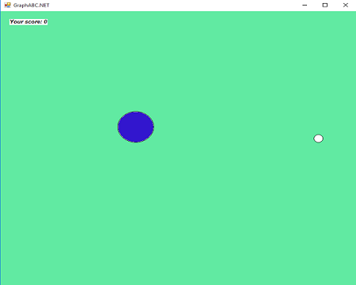
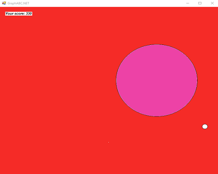

Декілька скріншотів з гри.
Початок гри

Гра почалась

Набрали кількість Point:330
Початок гри
Гра почалась
Набрали кількість Point:330
Мова програмування PascalABC.NET - це мова Pascal нового покоління, що включає в себе всі можливості стандартної мови Pascal, розширення мови Delphi Object Pascal, ряд власних розширень, а також ряд можливостей, які забезпечують його сумісність з іншими .NET-мовами.
PascalABC.NET є мультіпарадігменним мовою - на ньому можна програмувати в різних стилях: структурне програмування, об'єктно-орієнтоване програмування, функціональне програмування.
Крім того, наявність великої кількості стандартних .NET-бібліотек класів формує стиль, відчутно відрізняється від стилю стандартного Pascal.
Цю гру було розробленно в программі PascalABC.NET.Мета цієї гри показати, що за допомогою мови Паскаль можна не тільки вирішувати задачі,рівняння. Программа була створена майже за 2 уроки інформатики :).У чому сенс цієї гри? Треба просто збирати маленькі кола білого кольору, які можуть з'явитися у будь-якому місці.
Трохи далі я напишу схему керування "Великим колом"